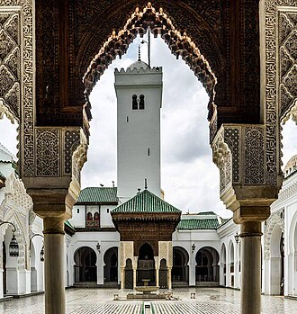

Voorstelling
جامع القَرَويين أو مسجد القَرَويين وعُرف بـ "جامع الجامعة"، هو جامع في مدينة فاس المغربية، شُرعَ في بنائه في الأول من رمضان 245 هـ الموافق 30 نوفمبر 859م، في عهد السلطان الإدريسي يحيى الأول، شيَّدته بحُرِّ مالها فاطمة الفهرية، وظلَّت صائمة إلى أن انتهت أعمال البناء، وصلَّت في المسجد شكرًا لله، وقد وهبت كلَّ ما ورثته لبناء المسجد. تكلف أهل المدينة وحكَّامها بتوسعة المسجد وترميمه والقيام بشؤونه. وأضاف الأمراء الزناتيون بمساعدةٍ من أمويي الأندلس 3 آلاف متر مربع إلى المسجد، ثم أجرى المرابطون توسعةً أُخرى.
The University of al-Qarawiyyin, also written Al-Karaouine or Al Quaraouiyine, is a university located in Fez, Morocco. It was founded as a mosque by Fatima al-Fihri in 857–859 and subsequently became one of the leading spiritual and educational centers of the Islamic Golden Age. It was incorporated into Morocco's modern state university system in 1963 and officially renamed "University of Al Quaraouiyine" two years later. The mosque building itself is also a significant complex of historical Moroccan and Islamic architecture that features elements from many different periods of Moroccan history.
Masjid Raya Qarawiyin dibangun oleh Idris II pada masa Bani Idrisiyyah tahun 192 Hijriah atau 806 Masehi di Fez, Maroko. Masjid ini adalah salah satu tanda peradaban Islam, pusat peribadatan dan universitas termaju dalam sejarah Islam. Sekarang universitas ini telah berubah menjadi universitas modern yang mengajarkan ilmu-ilmu Islam dan ilmu pengetahuan modern. Bangunan masjid ini memiliki keistimewaan karena beratapkan marmer. Mimbarnya termasuk mimbar yang terindah yang terkenal sampai sekarang. Masjid ini merupakan monster arsitek perpaduan Maroko-Andalusia.
جامع قرویین یا مسجد قرویین یہ ایک جامع مسجد ہے جو مراکش کے شہر فاس میں واقع ہے، جو ملک کے شمال مشرقی کونے میں ہے۔ اس مسجد کی تعمیر کا آغاز یکم رمضان 245 ہجری بمطابق 30 نومبر 859 عیسوی کو ادریسی حکمران یحییٰ اول کے حکم سے کیا گیا۔ ام البنین فاطمہ الفہریہ نے اس مسجد کی تعمیر کے لیے اپنا پورا ترکہ وقف کر دیا اور تعمیر مکمل ہونے تک روزہ رکھے رکھا اور جب مسجد مکمل ہو گئی تو اس میں شکرانے کی نماز ادا کی۔ شہر کے باشندے اور حکمران مسجد کی توسیع، مرمت اور دیکھ بھال میں حصہ لیتے رہے۔
Die Qarawīyīn-Moschee inmitten der Medina von Fès-el-Bali ist die historisch und politisch bedeutendste Moschee Marokkos.
Verhalen en overleveringen
TraditieFatima al-Fihriya, de stichteres uit Kairouan
Volgens de kroniek Rawd al-Qirtas erfde een jonge, ontwikkelde vrouw, Fatima al-Fihriya, dochter van een rijke koopman uit Kairouan in Tunesië, een groot fortuin. Rond 857-859 besloot ze het volledig te besteden aan de bouw van een moskee voor haar gemeenschap in Fez. De moskee kreeg de naam van de „mensen van Kairouan”: al-Qarawiyyin. Haar zus Maryam zou in hetzelfde jaar de moskee van de Andalusiërs hebben gesticht, aan de andere kant van de rivier. Dit verhaal komt uit bronnen die verscheidene eeuwen later zijn geschreven; sommige historici vinden het verfraaid, maar het blijft de aanvaarde overlevering.
Bron: Wikipedia : University of al-Qarawiyyin · Wikipedia : Fatima al-Fihri
Historisch feitDe bibliotheek en haar schatten
In 1349 stichtte de Merinidische sultan Abu Inan de bibliotheek van de moskee. Een deel van haar boeken kwam uit al-Andalus: enkele decennia eerder had sultan Abu Yusuf van de koning van Castilië, Sancho IV, handschriften gekregen uit de bibliotheken van Sevilla, Córdoba en Granada. Men bewaart er een Koran uit de 9e eeuw en delen van de Muwatta van imam Malik, geschreven op gazellenperkament. De bibliotheek, gerestaureerd door de architecte Aziza Chaouni, ging rond 2016 weer open.
Historisch feitHet geschenk van Ibn Khaldun
De grote historicus Ibn Khaldun, geboren in Tunis in 1332, woonde en doceerde een tijd in Fez. In 1396 schonk hij de bibliotheek van al-Qarawiyyin een exemplaar van zijn grote geschiedenisboek, de Kitab al-'Ibar, met zijn beroemde inleiding, de Muqaddima. Dit handschrift wordt nog steeds in de bibliotheek bewaard. De moskee trok ook veel Maghrebijnse en Andalusische geleerden aan; men bewaart er bijvoorbeeld een kopie uit 1320 van een werk over malikitisch recht van Ibn Rushd.
VolkslegendeEen toekomstige paus in Fez?
Men leest vaak dat Gerbert van Aurillac, die in 999 paus werd onder de naam Silvester II, aan al-Qarawiyyin zou hebben gestudeerd en de Arabische cijfers vandaar naar Europa zou hebben meegebracht. Dat is een legende: historici hebben geen enkel bewijs van dit verblijf gevonden. Vastgesteld is wel dat de joodse filosoof Maimonides in zijn jeugd in Fez woonde; het idee dat hij lessen volgde aan al-Qarawiyyin is een overlevering, zonder document dat het bewijst. Deze verhalen tonen het aanzien dat de moskee genoot, ver buiten de moslimwereld.
Historisch feitDe oudste universiteit ter wereld?
UNESCO en het Guinness Book of Records stellen al-Qarawiyyin voor als de oudste nog werkende instelling voor hoger onderwijs ter wereld. Veel historici nuanceren dat: eeuwenlang was het een moskeeschool (madrasa) met studiekringen, en geen „universiteit” in de Europese zin. Ze werd pas in 1963 een moderne staatsuniversiteit. Beide standpunten kloppen: er wordt al meer dan duizend jaar onafgebroken onderwezen, in verschillende vormen.
Bron: Wikipedia : University of al-Qarawiyyin · UNESCO : Medina of Fez
Op de kaart
Documenten en links
- Wikipédia — العربية
- Wikipédia — English
- Wikipédia — Bahasa Indonesia
- Wikipédia — اردو
- Wikipédia — Deutsch
- Wikidata — Q12204282
Gegevens: Wikidata (CC0), elke 3 maanden bijgewerkt. Het jaar is de oudst bekende bouwdatum van het gebouw: voor een gebouw dat later een moskee werd (zoals de Hagia Sophia), is het die van het oorspronkelijke gebouw. Foto's: Wikimedia Commons, maker en licentie op de pagina van elke foto.